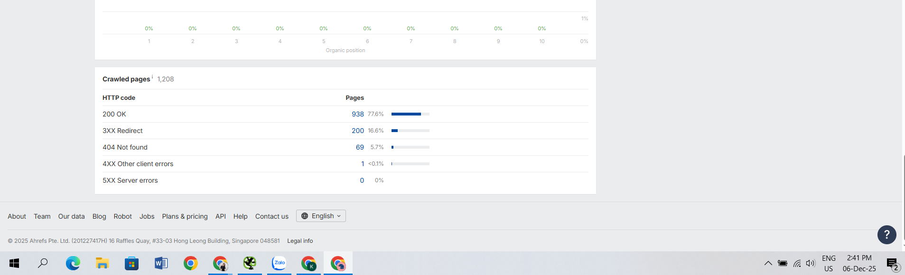
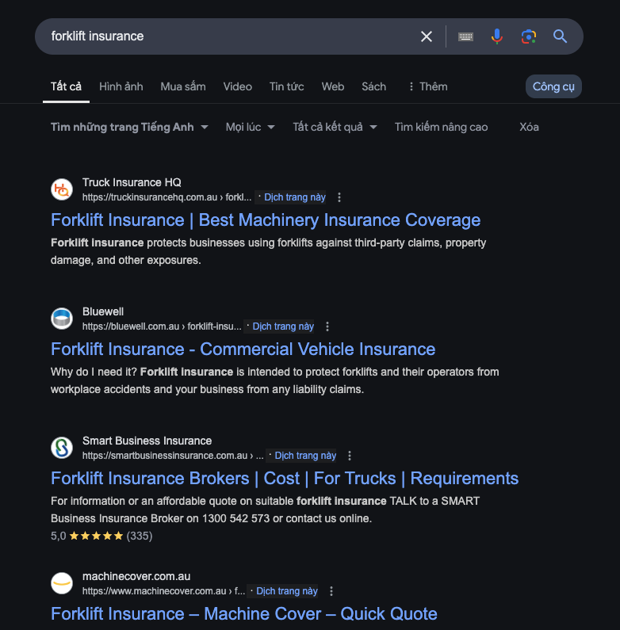
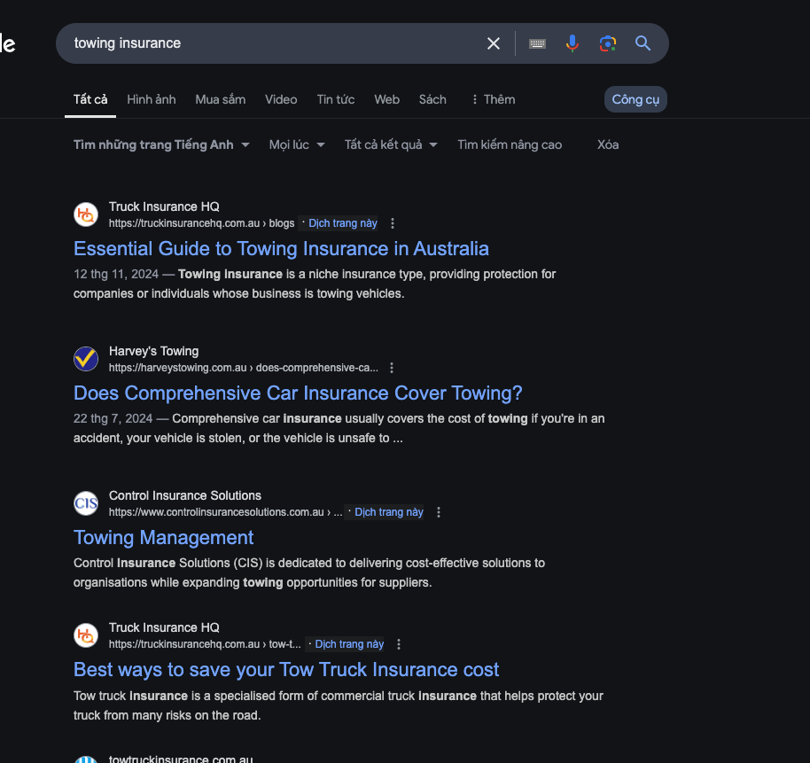
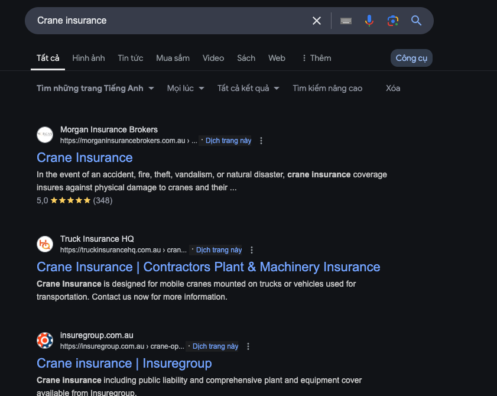
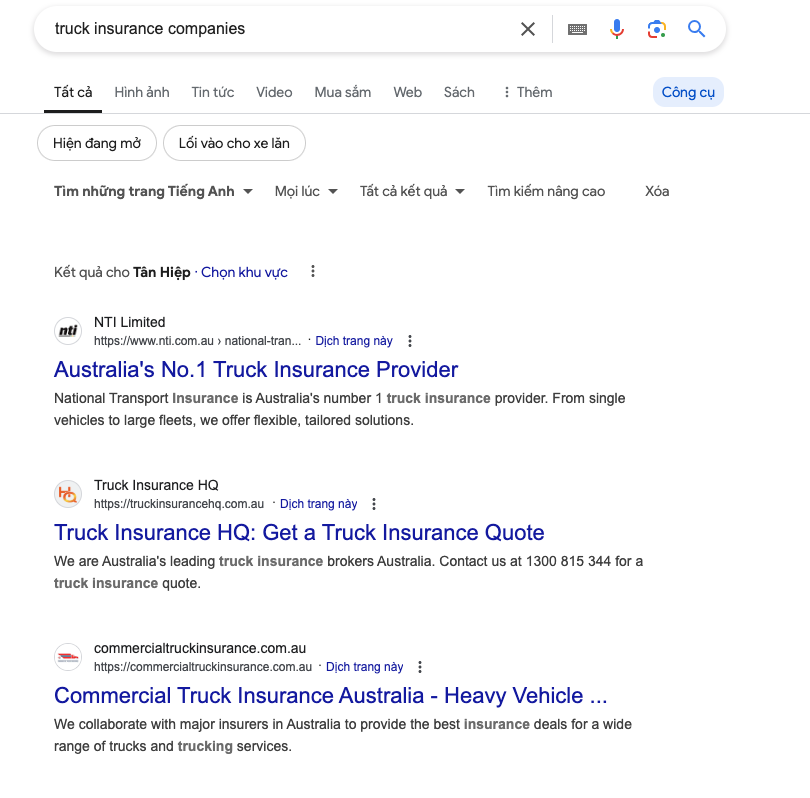
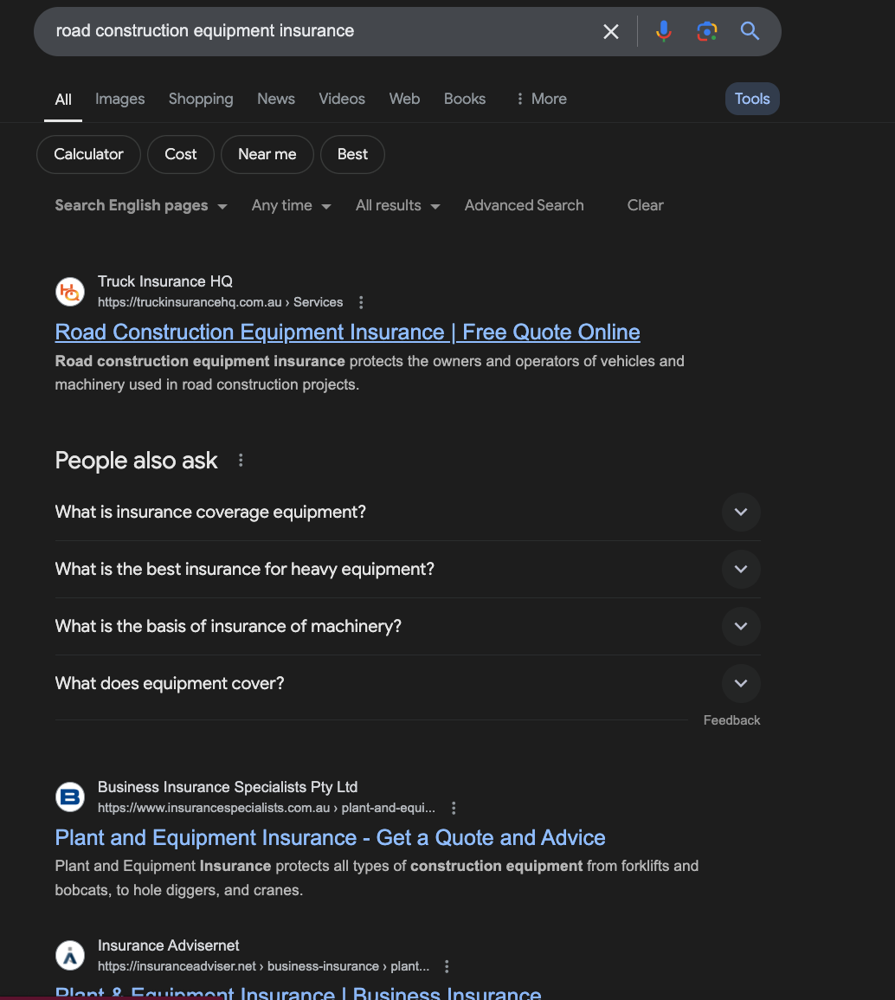
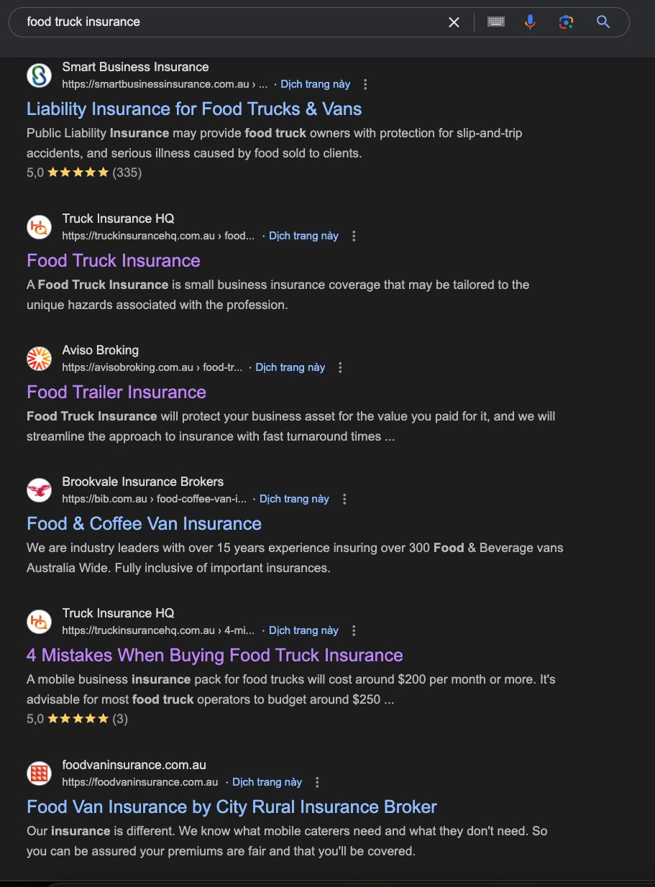

TruckInsuranceHQ
SEO strategy for Australian truck insurance, commercial vehicle insurance, fleet insurance and specialist transport insurance.
Visit Website ↗International SEO, Technical Optimization & Organic Growth
Managed SEO activities across two Australian insurance websites, covering technical audits, keyword research, content strategy, URL management, content consolidation and organic search optimization.
SEO strategy for Australian truck insurance, commercial vehicle insurance, fleet insurance and specialist transport insurance.
Visit Website ↗SEO strategy for Australian gym owners, fitness businesses and specialist insurance requirements.
Visit Website ↗Historical Google Search Console snapshot. Its date range was not visible in the saved image, so these values are presented as a snapshot rather than a time trend.
Researched commercial insurance keywords and assessed search demand, ranking difficulty and business relevance.
Grouped related search terms and mapped keyword targets to relevant service pages and articles.
Reviewed overlapping keyword targets and competing article topics to identify content consolidation opportunities.
Monitored keyword positions and landing-page visibility using available Semrush ranking exports.
| Keyword | Position | Market | Note |
|---|---|---|---|
| truck insurance | #6 | Australia | Historical snapshot · 11 Aug 2025 |
| dump truck insurance | #5 | Australia | Historical snapshot · 11 Aug 2025 |
| truck insurance melbourne | #15 | Australia | Historical snapshot · 11 Aug 2025 |
| truck insurance online | #18 | Australia | Historical snapshot · 11 Aug 2025 |
Positions are historical Semrush records from 11 Aug 2025. The archive does not include a confirmed date for the earlier #9 position, so only the dated snapshot is charted below.
Bar length shows relative strength within the first 20 positions. It is not a change-over-time chart.
Conducted technical SEO crawls using Screaming Frog, identified website issues, organized affected URLs and worked on resolving technical problems across both insurance websites.
Crawled website URLs and analyzed response codes, internal links, indexability and page-level technical signals.
Identified redirect responses, broken links, canonical issues and non-indexable URLs through crawl reports.
Prioritized affected URLs and worked on implementing technical corrections based on audit findings.
Reviewed audit records and checked correction status using the available technical spreadsheets.
These are historical audit-tracking figures. They document processed items in the workbook and are not a live crawl or independent confirmation of current website status.
Reviewed and optimized page titles and meta descriptions.
Reviewed heading hierarchy and page-level content structure.
Improved article content relevance and alignment with search intent.
Reviewed internal links and page relationships where relevant.
Reviewed thin content, duplicate topics and existing article performance.
Grouped related keywords according to topic and search intent.
Merged relevant articles, removed unnecessary content and rewrote selected pages.
Improved metadata, headings, content relevance and internal links.
Identified high-intent insurance keywords and prioritized opportunities based on search demand and business relevance.
Developed content plans, topic clusters and page-level optimization priorities for the Australian market.
Merged overlapping keyword targets, consolidated relevant articles and removed unnecessary content.
Aligned organic landing pages with commercial search intent and the user journey toward insurance enquiries.
When I took over the project, the website had undergone a URL structure change. A /blogs/ slug had been introduced across article URLs, although the previous website structure did not use this slug.
Redirect implementation and canonical signals were not handled consistently, contributing to organic traffic disruption.
The website contained thin-content articles and overlapping content targeting similar keywords and search intent. This created content duplication and keyword cannibalization concerns.
Developed a recovery approach combining URL structure review, technical SEO corrections and content consolidation to improve the website's technical foundation and content quality.
Consolidated overlapping articles by grouping related keywords and combining relevant information into stronger, more comprehensive pages.
Implemented 301 redirects for outdated article URLs to their consolidated replacement pages or the most relevant existing pages.
The project involved technical SEO remediation, URL management, content consolidation and ongoing organic performance optimization.
TruckInsuranceHQ recorded a 50% increase in organic traffic within six months, based on the previously documented project result.
Supporting Google Search Console and technical audit evidence is presented separately in this dashboard.
1.73M impressions · 0.4% CTR · average position 23.5
Snapshot date range was not visible in the saved report.Four selected TruckInsuranceHQ commercial keywords.
Positions recorded on 11 Aug 2025.Redirect inlink records marked as processed.
Processing status does not independently confirm that every item was fixed.Organic traffic growth over six months for TruckInsuranceHQ.
Historical result recorded in the project notes.






These images were recovered from the Truck SEO Plan and technical audit files you shared. The search-result captures do not show a capture date, so they are presented as historical evidence, not current rankings.